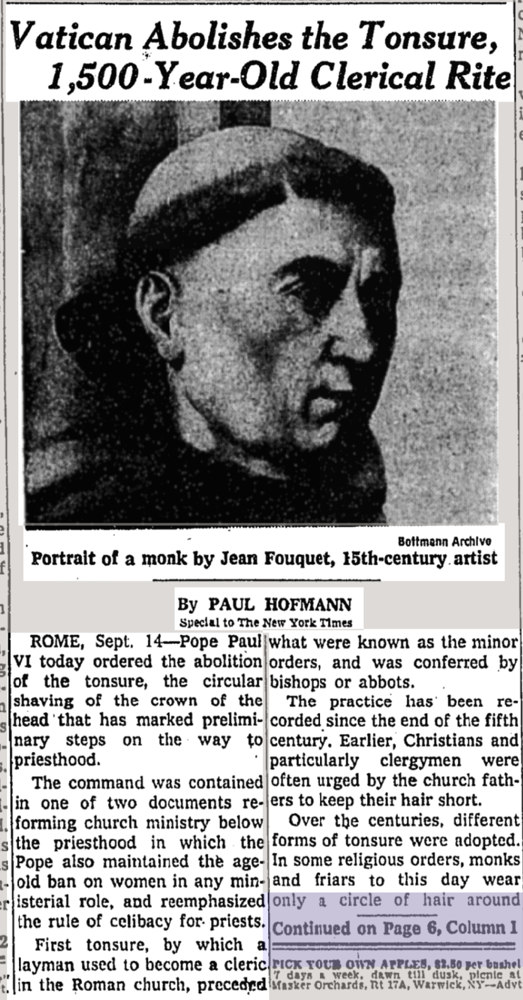
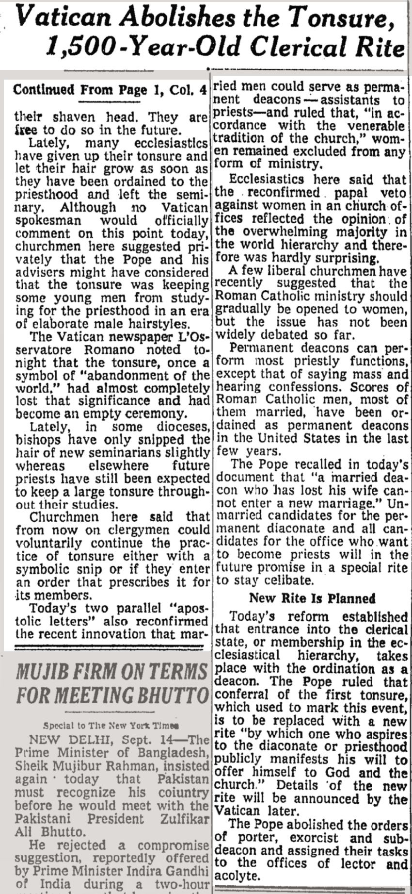

[home]
Happy Tonsure Abandonment day. On this day in 1972, the New York Times ran this story on their front page.
My favorite quote, "Although no Vatican spokesman would officially comment on this point today, churchmen here suggested privately that the Pope and his advisers might have considered that the tonsure was keeping some young men from studying for the priesthood in an era of elaborate male hairstyles."
Also interesting, "The Pope abolished the orders of porter, exorcist and sub-deacon and assigned their tasks to the offices of lector adn acolyte."

